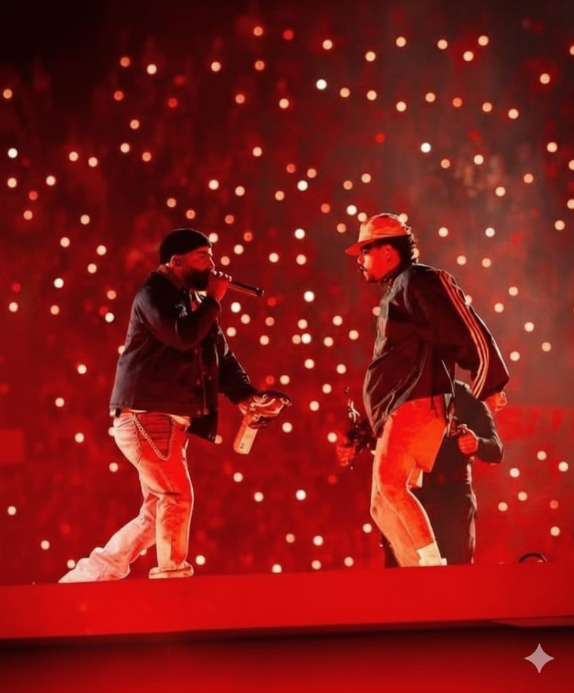
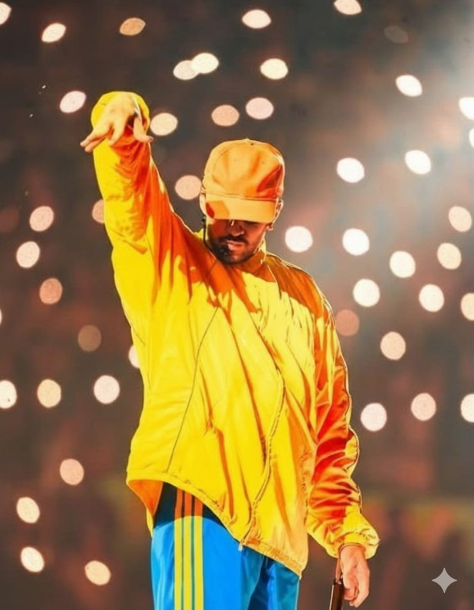
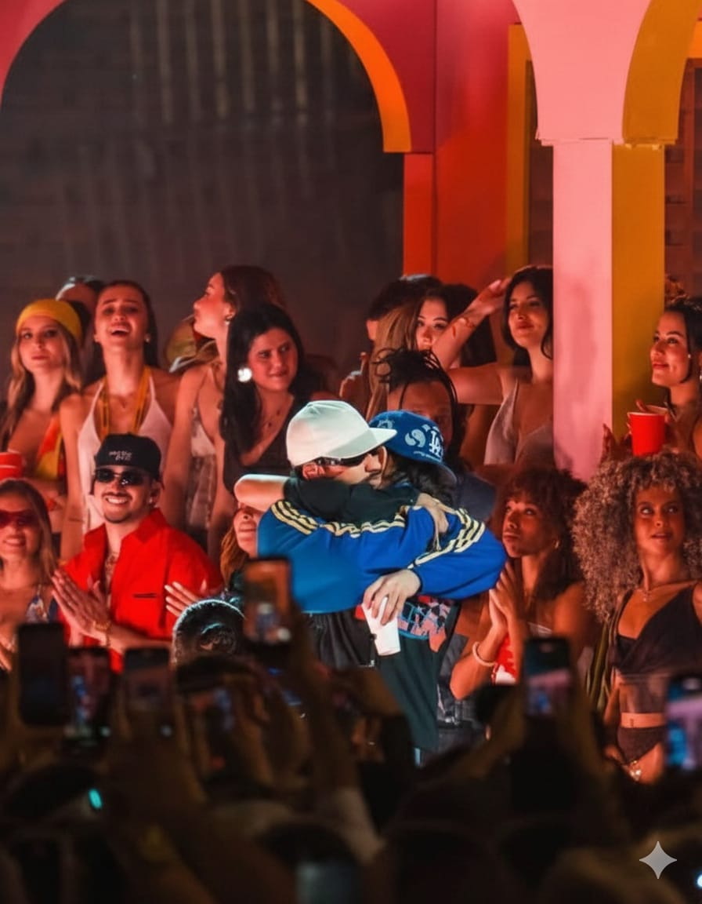

DEBI TIRAR MAS FOTOS


El concierto de Bad Bunny fue uno de los eventos más esperados en Colombia y uno de los que más marcó tendencia en todo el país. El público quedó sorprendido por las múltiples sorpresas que el “Conejo Malo” tenía preparadas para su espectáculo.
Como superestrella mundial, también rindió homenaje a grandes figuras de la cultura colombiana como Yeison Jiménez y Diomedes Díaz. El show fue muy amado por sus fanáticos.
Uno de los momentos más explosivos de la noche fue la aparición sorpresa de Arcángel, con quien Bad Bunny interpretó una colaboración en vivo que hizo vibrar a todo el estadio.



El concierto de Bad Bunny también contó con la aparición de Karol G, una de las intérpretes colombianas más reconocidas. Ese momento se convirtió en uno de los más memorables para Colombia, y la emoción del público se podía sentir en cada rincón del estadio.
La energía que se vivió fue indescriptible: los fanáticos no dejaban de cantar ni de bailar al ritmo de cada canción, vitoreando y aplaudiendo a su ídolo con entusiasmo. La conexión entre el artistas y su público hizo que cada instante fuera inolvidable.
Muchos habían esperado este momento, y para los fanaticos fue un espectáculo que quedará grabado en la memoria como uno de los eventos musicales más emocionantes y significativos de sus vidas.